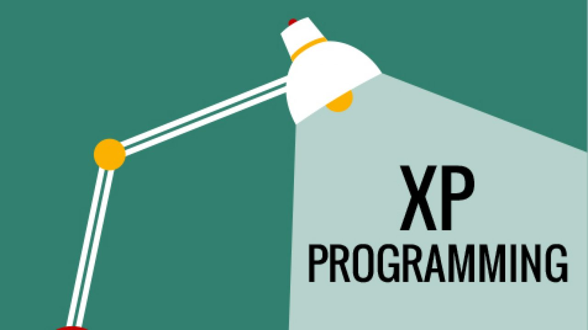

Scrum
ScrumEl marco “Scrum”, tal como lo conocemos hoy, se introdujo por primera vez en un artículo de la Harvard Business Review en 1986 El nuevo juego de desarrollo de nuevos productos (The New New Product Development Game), escrito por Hirotaka Takeuchi e Ikujiro Nonaka. Takeuchi y Nonaka tomaron el término “Scrum” del rugby, explicando que “como en el rugby, los miembros del equipo se pasan la pelota entre sí, a medida que avanzan como una unidad por el campo de juego”.
Recomendación:

Programación XP
Programación XPEsta es una metodología ágil creada para responder a ambientes muy cambiantes donde se necesita una retroalimentación permanente. Ella busca enfatizar la adaptabilidad de un proyecto, sólo así se conseguirá el resultado esperado.
Recomendación:
Kanban
KanbanKanban es una palabra japonesa que en español significa “tarjeta visual”. Esta metodología sugiere una comunicación en tiempo real y controla el trabajo a través de una línea de producción. Es decir, se crean tres columnas: pendientes, en proceso y terminadas. De esa forma, es posible clasificar las tareas y visualizar fácilmente sus avances.
Recomendación